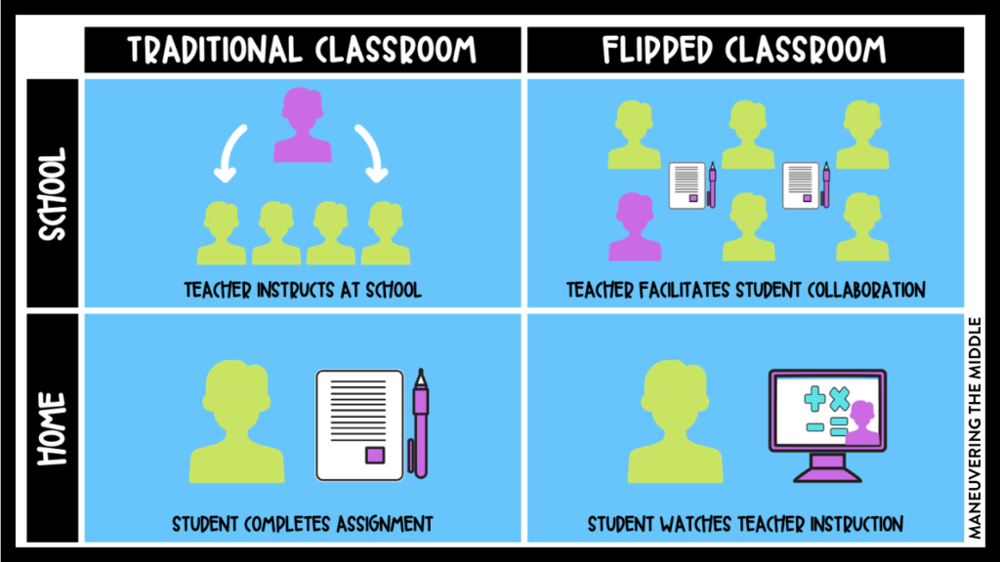

Education in Flipped Classroom

Definition
The flipped classroom is an instructional approach where traditional teaching methods are reversed. In this model, students learn new content outside of the classroom through online resources, such as videos, readings, or interactive tutorials. Classroom time is then dedicated to discussions, collaborations, and hands-on activities that reinforce the pre-learned material.
Key Components
- Pre-Recorded Content: Teachers create or curate educational videos or other resources that students can access before attending class. These materials serve as the primary source for content delivery.
- Individual Learning: Students independently study the pre-recorded content, allowing them to proceed at their own pace and review the material as needed.
- In-Class Activities: Classroom time is used for interactive activities, such as discussions, problem-solving, group work, and experiments, where students apply their knowledge and receive guidance and feedback from the teacher.
- Teacher Facilitation: The role of the teacher shifts from being the primary deliverer of content to that of a facilitator, providing guidance, answering questions, and promoting deeper understanding.
- Technology Integration: The flipped classroom heavily relies on technology tools and platforms, such as learning management systems (LMS), online video platforms, and collaborative software, to deliver and support the learning experience.
.png)
Benefits of Flipped Classroom
- Active Learning: Students are actively engaged in the learning process during class time, promoting a deeper understanding of the material.
- Personalized Learning: Students can learn at their own pace and revisit the content as needed, catering to individual needs and learning styles.
- Collaboration and Communication: Classroom activities encourage peer-to-peer interaction, collaboration, and effective communication skills.
- Enhanced Teacher-Student Interaction: With more individualized attention available during in-class activities, teachers can provide targeted support and feedback to students.
- Higher Order Thinking: The flipped classroom promotes critical thinking, problem-solving, and application of knowledge, fostering higher-order thinking skills.
- Flexibility: Students can access the pre-recorded content anytime and anywhere, allowing for flexibility in scheduling and accommodating diverse student needs.
Challenges
While the flipped classroom has several benefits, it also presents some challenges:
- Access to Technology: Students may have varying levels of access to the required technology and internet connectivity outside of school.
- Teacher Training: Educators need training and support to effectively design and implement flipped classroom models.
- Content Creation: Developing quality pre-recorded content requires time, effort, and expertise from teachers.
- Student Accountability: Students need to take responsibility for completing pre-learning activities to fully engage in in-class activities.
- Classroom Management: With a more student-centered approach, managing classroom dynamics and ensuring productive use of class time can be challenging.
Conclusion
The flipped classroom is a teaching method that has gained popularity in recent years. By shifting the focus from content delivery in the classroom to active learning and application of knowledge, it offers numerous benefits for both students and teachers. However, it also requires careful planning, technological resources, and ongoing support to overcome challenges and maximize its potential in improving education.